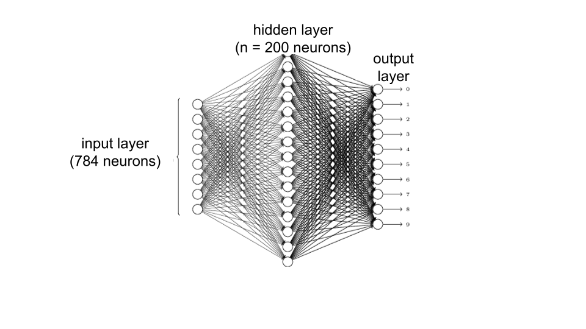
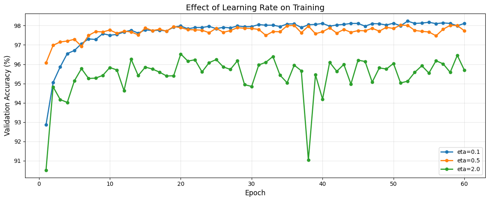
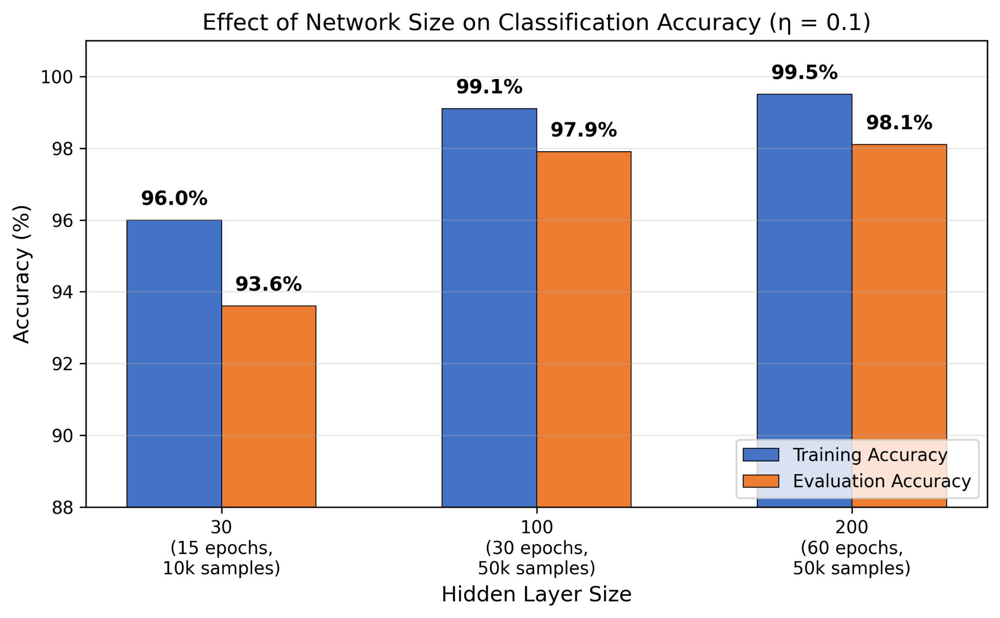
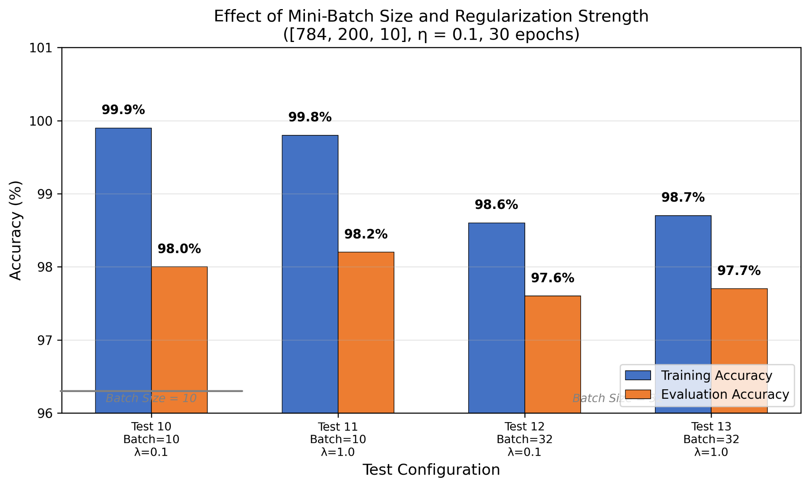
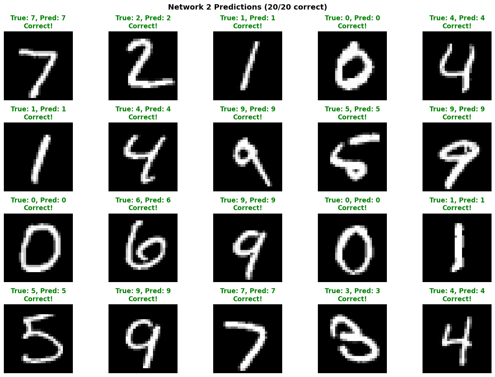

Hojung Lim · MASC 520 – Project 1 · USC Spring 2026

Figure 1: Network architecture — 784 input neurons, 200 hidden neurons, 10 output neurons
A three-layer feedforward network: 784 input neurons (one per pixel), a variable hidden layer, and 10 output neurons (one per digit class). All neurons use sigmoid activation. Training uses stochastic gradient descent with backpropagation.
Key improvements over the baseline:
Four hyperparameters were varied: hidden layer size (30, 100, 200), learning rate (0.1, 0.5, 2.0), regularization strength (λ = 0.1, 1.0, 5.0), and mini-batch size (10, 32).
| Test # | Architecture | Epochs | Batch | η | λ | Samples | Train Acc. | Eval Acc. |
|---|---|---|---|---|---|---|---|---|
| 1 | 784,30,10 | 15 | 10 | 0.1 | 5.0 | 10k | 96.0% | 93.6% |
| 2 | 784,30,10 | 15 | 10 | 0.5 | 5.0 | 10k | 96.4% | 93.4% |
| 3 | 784,30,10 | 15 | 10 | 2.0 | 5.0 | 10k | 89.4% | 87.9% |
| 4 | 784,100,10 | 30 | 10 | 0.1 | 5.0 | 50k | 99.1% | 97.9% |
| 5 | 784,100,10 | 30 | 10 | 0.5 | 5.0 | 50k | 98.9% | 97.7% |
| 6 | 784,100,10 | 30 | 10 | 2.0 | 5.0 | 50k | 96.1% | 95.8% |
| 7 ★ | 784,200,10 | 60 | 10 | 0.1 | 5.0 | 50k | 99.5% | 98.1% |
| 8 | 784,200,10 | 60 | 10 | 0.5 | 5.0 | 50k | 99.2% | 98.0% |
| 9 | 784,200,10 | 60 | 10 | 2.0 | 5.0 | 50k | 95.6% | 95.6% |
| 10 | 784,200,10 | 30 | 10 | 0.1 | 0.1 | 50k | 99.9% | 98.0% |
| 11 | 784,200,10 | 30 | 10 | 0.1 | 1.0 | 50k | 99.8% | 98.2% |
| 12 | 784,200,10 | 30 | 32 | 0.1 | 0.1 | 50k | 98.6% | 97.6% |
| 13 | 784,200,10 | 30 | 32 | 0.1 | 1.0 | 50k | 98.7% | 97.7% |

Figure 2: Effect of learning rate on [784, 200, 10] network
Learning rate had the largest impact. With [784, 100, 10]: η=0.1 → 97.9%, η=0.5 → 97.7%, η=2.0 → 95.8%. Too high a learning rate causes weight updates to overshoot.

Figure 3: Effect of network size — 30 vs. 100 vs. 200 hidden neurons
Larger hidden layers improve accuracy, but only when paired with sufficient epochs and training data: 30 neurons → 93.6%, 100 neurons → 97.9%, 200 neurons → 98.1%.

Figure 4: Effect of mini-batch size and regularization strength ([784,200,10], η=0.1, 30 epochs)
Batch size 10 outperformed batch size 32 (97.6–97.7% vs 98.0–98.2%) because smaller batches update weights ~3× more frequently per epoch. Regularization strength (λ=0.1 vs 1.0) had minimal impact, suggesting the network is not very sensitive to λ in this range.

Figure 5: Predictions of the best model ([784,200,10], η=0.1, λ=5.0, 60 epochs) on 20 MNIST test images
Accuracy improved from ~95% to 98.1%. The biggest gains came from the right cost function (cross-entropy), regularization, and careful learning rate selection — not from simply enlarging the network. Key findings: